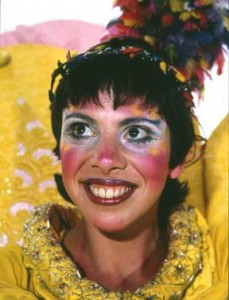

Bits ‘N Pieces Puppet Theatre is dedicated to influencing the world of tomorrow by enchanting the children of today. Through the theatrical retelling of classic children’s stories, each with its own unique life lesson and moral, Bits ‘N Pieces brings to life the magical wonderment of children’s fantasy and reinforces the core values long told and emphasized by great storytellers.
From script and design to actual building and choreography, it takes two years to produce one complete giant puppet production. Yet, each season, Bits ‘N Pieces continues to bring forth a new musical production of high quality children’s theatre. Shows featuring the magical nine-foot-tall puppets may be seen in a variety of venues and settings during the touring season. The company tours extensively throughout the United States and makes international appearances under the sponsorships of cultural exchange programs with Hong Kong, Japan, Singapore and Taiwan.
Thousands of children have experienced the art of puppetry with Bits ‘N Pieces’ Master Puppeteers at the beautiful PuppetWorld Playhouse since its opening. Traditional puppet shows based on classic children’s literature are presented throughout the year with a full repertory of puppetry styles from around the world including hand puppets, marionettes, rod puppets, and shadow puppets. In addition to performance and workshop space, the facility gives visitors an up close look at the GIANT puppet exhibition and puppet-building studios. It’s an ideal venue for school field trips and large groups. Can’t make it to PuppetWorld? We’ll bring a show to you. Call (813) 659-0659 to arrange a performance at your location.
Each of our musical productions is adapted and specifically developed to complement and enhance the educational curriculum of the nation’s elementary school systems. Education booklets are made available to sponsors to supplement that community’s teachers’ plans. Bits ‘N Pieces also offers a variety of workshops and residencies for teachers and students as hands-on learning experiences. More information on workshops and residencies.
Bits ‘N Pieces’ combination of imagination, artistry, and hard work have made it an award-winning representative of Florida arts at home and abroad. Recognition of its achievements include:
Bits ‘N Pieces first participated in international cultural exchange programs in 1988 – the same year it began presenting international puppetry artists to children in Florida. Since then, we’ve traveled to countries throughout Europe and Asia presenting our unique form of American artistry.
Jerry BickelExecutive Director, Producer, ArtistJerry Bickel, founder of the Bits ‘N Pieces Puppet Theatre in 1976, was the child who in 1959 dreamt of having his own puppet company. In addition to his performance talents, Jerry writes the script and lyrics for each show. His work has appeared in national and international puppetry festivals and has been presented in three languages. Since 1978 he has created, written and produced 11 original giant puppet musicals based on adaptations of favorite children’s tales and a dozen smaller works. He has developed 19 international cultural exchange projects. |

Holli RubinArtistic Director, Master Puppet BuilderA graduate of the University of South Florida, Holli Rubin is the company’s performer extraordinaire and master puppet builder. Since 1977, she has created puppets for 16 productions, including 52 giant puppets for 11 shows. In addition she is responsible for costumes, maintenance of repertoire, tour management, dance director, training and sponsor relations. Holli develops and leads all Bits ‘N Pieces arts-in-education programs presented on tour as well. She has taken the company on 12 international tours to Asia and Europe. In 1998 she was profiled in the award-winning series, Off the Wall. |
|
PuppetWorld Playhouse, Home of Bits ‘N Pieces Studios and the Enchanting PuppetWorld Stage Productions 12904 Tom Gallagher Road
It’s easy to get to to PuppetWorld Playhouse. We’re just 10 minutes east of downtown Tampa!
|